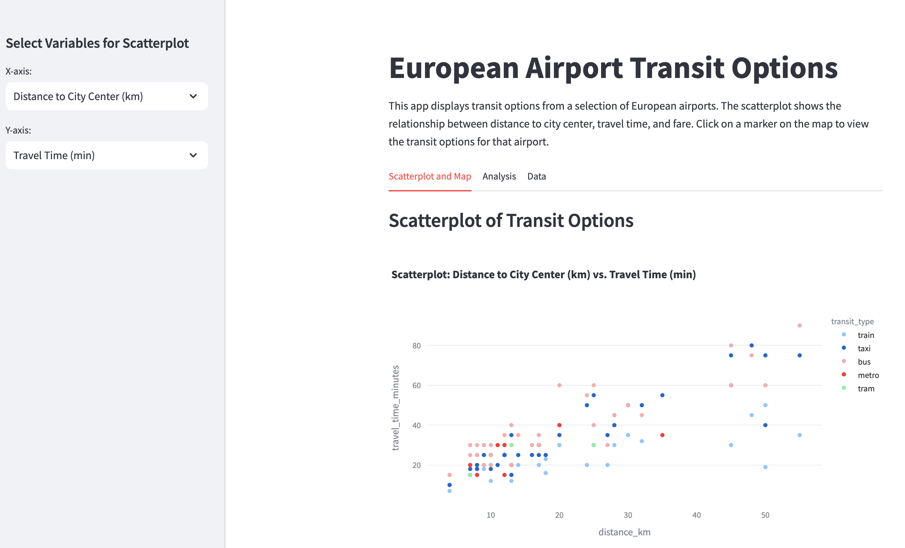

{
"name": "Heathrow Airport",
"city": "London",
"distance_km": 24,
"airport_coords": { "lat": 51.4700, "lon": -0.4543 },
"city_coords": { "lat": 51.5074, "lon": -0.1278 },
"transit_options": [
{
"mode": "Heathrow Express",
"transit_type": "train",
"travel_time_minutes": 20,
"frequency": "every 15 minutes",
"fare_euros": 25
},
{
"mode": "Taxi",
"transit_type": "taxi",
"travel_time_minutes": 50,
"frequency": "on-demand",
"fare_euros": 65
},
{
"mode": "Bus",
"transit_type": "bus",
"travel_time_minutes": 55,
"frequency": "every 30 minutes",
"fare_euros": 8
}
]
},Transit Trek
For a long time, I have had an idea simmering in the back of my mind: could I get a large language model to collect transit data for European airports without me spending countless hours scouring the web? Recently, with OpenAI’s o3-mini-high model now capable of reasoning its way through more complex tasks, I decided it was time to put this idea to the test.
The Spark of Inspiration
The inspiration came from a personal experience. My girlfriend Kathy lives in Paris, while I call Lund, Sweden home. Over the past couple of years, I’ve made many trips to Paris – mostly by plane (I do my best to minimize my environmental footprint in other ways). One recurring frustration was the transit experience at Paris CDG. Arriving in the evening often meant missing the last RER B train, leaving me to try and find a fellow frustrated flier to share an expensive taxi ride with into the city. By contrast, Copenhagen’s airport offers a seamless metro connection that runs round the clock from the airport into the city (the trains drive themselves!).
This contrast led me to wonder: how do transit options from European airports compare? How do factors like travel time, cost, and service frequency vary from one city to another?
The Challenge
My goal was clear, but I didn’t want to have to walk through each step myself, wading through blogs, official websites and Google Maps to collect the data. I wanted to focus on the insights, not the grunt work. I had in mind a two-step process:
- Data Collection:
- Start with the list of Europe’s busiest airports from Wikipedia.
- For each airport, gather details on the distance to the city center and the transit options available—covering travel time, frequency, and fare estimates for modes like trains, buses, taxis, and metros.
- Interactive Visualization:
- Create a dashboard with an interactive scatterplot and a clickable map for users to compare transit options.
- Include charts that, for example, highlight the biggest fare differences or the taxi price per kilometer by airport.
I pictured a simple app to peak at the data, and perhaps a scatter plot that I could use to compare different metrics.
Testing AI Capabilities
Back when OpenAI’s in March of 2023, just after signing up for ChatGPT Plus, I set it the task. I wanted a solution that could handle the tedious parts—googling, scraping, and assembling a consistent dataset—so I could focus on the insights. Unfortunately, GPT-3.5 struggled; its inability to search the web and inconsistent outputs meant that my vision remained out of reach.
I started down the path of building a pipeline that used a search engine API to find the data, pass it to GPT-3.5 for processing, and asked the LLM to produce the structred data for each airport. Prior to the support for structured output, the JSON that I got back was hit and miss both in terms of content and structure. This required a lot of manual intervention.
I then tried a few other models, including Claude Sonnet 3.5, which did a reasonable job but still required more intervention than I would have liked. This weekend I asked OpenAI’s o3-mini-high model to give it a go. I gave it a clear prompt:
“I want to create a dataset of transit information for the 50 busiest airports in Europe to the city centers they serve. Each result should include the distance in kilometers, and for each transit method—such as taxis, trains, trams, or buses—provide travel time, frequency, and one-way fare in euros, all formatted in a consistent JSON schema.”
To my surprise, the model succeeded for most airports, delivering data for 44 out of 50 – a decent starting point.
Here is an example of the JSON output for Heathrow Airport in London:
Building the Transit Trek App
Once I had the data, I asked the o3-mini-high model to create a Streamlit app to display it interactively. I think it did a decent job; the app is now live and available for anyone to explore at transit-trek.streamlit.app.

The app features three tabs:
Exploratory Tab:
A customizable scatterplot lets users choose which metrics to compare (for example, distance versus travel time). A Folium map with clickable markers—each displaying a neat, formatted HTML table—provides a geographical perspective on transit options.Analysis Tab:
This section dives into the insights. One chart highlights the difference between the cheapest and most expensive fares per airport, while another bar chart compares taxi prices per kilometer, revealing, for instance, that Geneva’s taxis are among the priciest while Istanbul offers more affordable rides.Data Tab:
Here, users can inspect the raw and flattened datasets, ensuring transparency and inviting further exploration.
Insights & Opportunities
The app immediately uncovered some interesting patterns:
- Transit Variation:
Unsurprisingly, when looking at travel time and holding distance constant, we see that the fastest transit options are trains and metros (dark blue and pink), while taxis are next fastest (light blue), followed by busses (in red).
- Fare Differentials:
Busses and metros lead the pack in affordability, with trains and taxis costing more. The scatterplot reveals that some airports—like Geneva and Zurich—have a wide range of fares, while others—like Istanbul and Madrid—offer more consistent pricing.
I think that the current app is a very good start, especially given that it took me a couple of hours to refine based on the output from the o3 model.
Looking ahead, there are plenty of opportunities to improve the app:
Population Metrics:
Incorporating data on city populations might explain why airports in mega-cities like Paris and London have longer distances and varied transit options.Data Quality:
A more robust quality assurance process could update outdated figures—such as revised taxi fares—to ensure the app remains current. I picked up some old data for the RER B train from CDG to Paris, for example, which now costs €12, rather than the €10 I have in the dataset.
Conclusion
Transit Trek is just a dashboard. With the OpenAI o3-mini-high model, I could automate a process that once required a great deal of manual effort. I think this was a useful benchmark for me to understand the capabilities of modern LLM systems and how they can support our work as idea havers.